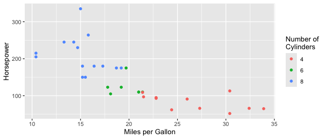
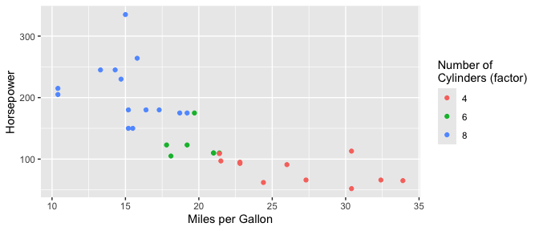

Nicknames allows you to specify human readable names for the columns in your data once and then reuse them across your project to rename plots axes, dataframe columns, tables and anything else.
Installation
You can install the development version of nicknames from GitHub with:
# install.packages("pak")
pak::pak("jansim/nicknames")Example
With nicknames, you can register the mapping between columns in your data and human readable column names once and easily re-use them everywhere.
library(nicknames)
nn_register(c(
"mpg" = "Miles per Gallon",
"hp" = "Horsepower",
"cyl" = "Number of\nCylinders"
))Including ggplot2 plots…
library(ggplot2)
# Create plot and apply nickname labels
ggplot(mtcars, aes(x = mpg, y = hp, color = factor(cyl))) +
geom_point() +
labs_nn()
…dataframes…
library(dplyr)
mtcars |>
select(mpg, hp, cyl) |>
nn() |>
head()
#> Miles per Gallon Horsepower Number of\nCylinders
#> Mazda RX4 21.0 110 6
#> Mazda RX4 Wag 21.0 110 6
#> Datsun 710 22.8 93 4
#> Hornet 4 Drive 21.4 110 6
#> Hornet Sportabout 18.7 175 8
#> Valiant 18.1 105 6…and column names directly.
nn("mpg")
#> [1] "Miles per Gallon"While variables names are extracted from within function calls (e.g. factor(cyl) above), more exact matches take priority if you need to be precise.
nn_register(c(
"factor(cyl)" = "Number of\nCylinders (factor)"
))
ggplot(mtcars, aes(x = mpg, y = hp, color = factor(cyl))) +
geom_point() +
labs_nn()